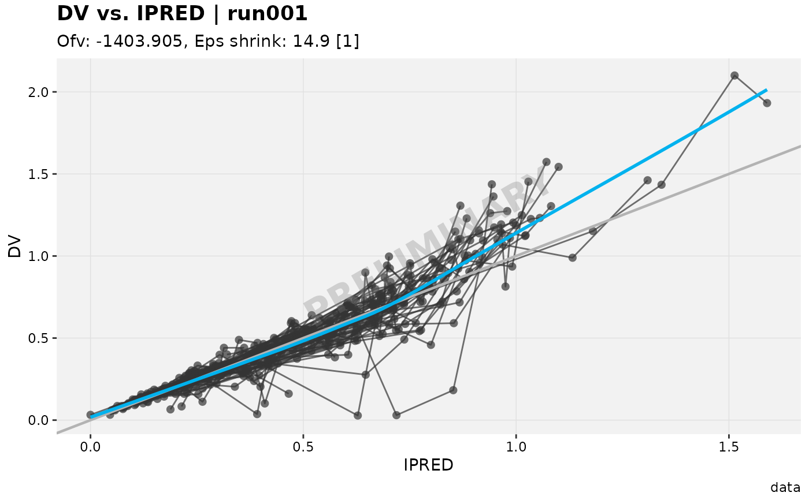
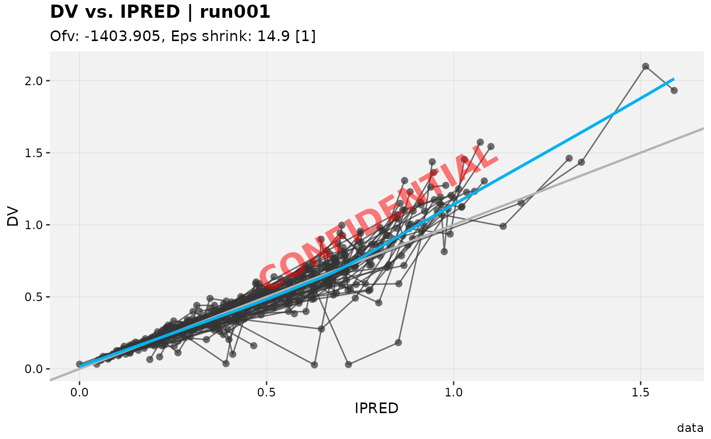

Overlays large, semi-transparent, rotated text across a ggplot or
xpose_plot object (e.g. "DRAFT", "PRELIMINARY", "CONFIDENTIAL").
Calling it directly always adds a watermark (falling back to the
built-in defaults below if nothing else is configured). It is also
applied automatically by print.xpose_plot() and
ggsave_xp() whenever a default_watermark is actually configured
(see the auto_apply entry in set_xtras_options()) – unlike this
function, that automatic trigger never invents an unconfigured
watermark on its own.
label/colour/alpha/size/angle/fontface resolve with the same
precedence as apply_default_labs(): (in increasing precedence) the
xpose.xtras.default_watermark R option, xpdb-level defaults set via
set_default_watermark() (when xpdb is supplied), then the argument
itself when explicitly passed. Built-in fallbacks ("DRAFT",
"grey50", 0.3, 24, 30, "bold") apply if a setting isn't
resolved from any of those.
Arguments
- plot
<
ggplot> or <xpose_plot> object- label
<
character> Watermark text- colour
<
character> Text colour, passed togrDevices::adjustcolor()- alpha
<
numeric> Transparency of the watermark text, between 0 (invisible) and 1 (opaque)- size
<
numeric> Font size in points- angle
<
numeric> Rotation angle in degrees (counter-clockwise)- fontface
<
character> Font face, passed togrid::gpar()- xpdb
<
xpose_data> or <xp_xtras> objectplotwas built from, used to resolvexpdb-level defaults (seeset_default_watermark())
See also
set_xtras_options() for the full list of xpose.xtras.*
session options, and get_xtras_option() to check which tier
(option/xpdb) is currently dominant for a given xpdb.
Examples
p <- xpose::dv_vs_ipred(xpose::xpdb_ex_pk)
#> Using data from $prob no.1
#> Filtering data by EVID == 0
add_watermark(p, label = "PRELIMINARY")
#> `geom_smooth()` using formula = 'y ~ x'

options(xpose.xtras.default_watermark = list(label = "CONFIDENTIAL", colour = "red"))
add_watermark(p)
#> `geom_smooth()` using formula = 'y ~ x'

options(xpose.xtras.default_watermark = NULL)